전자부품장착기능사 (2006-07-16 기출문제)
1과목: SMT 개론
1. 다음 중 에스엠티(SMT) 장점에 대한 서술로 틀린 것은?
- 제품의 신뢰성 및 성능향상
- 기판 조립의 자동화 용이
- 요구불량 수정 및 재작업의 용이
- 생산성 향상
(정답률: 88%)

2. 실장기(장착기)의 방식이 아닌 것은?
- IN-LINE 방식
- ONE BY ONE 방식
- OFF-LINE 방식
- MULTI 방식
(정답률: 87%)
3. PCB내 부품점수가 100점이 장착 되어 진다면 0.1/1점을 장착할 수 있는 설비로 1시간 동안 생산 가능한 PCB 수량으로 맞는 것은?
- 60개
- 180개
- 360개
- 720개
(정답률: 86%)
4. Cream Solder 중 가장 일반적으로 사용되어 지는 합금으로 맞는 것은?
- Sn+Pb+Ag
- Sn+Pb+Ag+B
- Sn+Pb+Ag+Bi+Cd
- Sn+Pb+Zn
(정답률: 89%)
5. 표면실장 장치에서 부품을 흡착하는 도구를 무엇이라 하는가?
- 노즐
- 카셋트
- 헤드
- 헤드 유니트
(정답률: 82%)
6. 다음 중 표면실장 인라인 구성 설비가 아닌 것은?
- 스크린 프린터
- 마운터
- 리플로우
- 솔더 교반기
(정답률: 78%)
7. 다음 그림 중 일반적으로 마운터에서 실장하지 않는 부품은 어느 것인가?
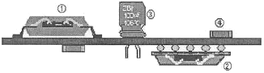
- ①
- ②
- ③
- ④
(정답률: 86%)
8. 칩 부품(각진 형태의 부품)중 크기 표기가 올바른 것은?
- 3216(3.0mm×2.16mm)
- 2012(2.0mm×1.25mm)
- 1608(1.0mm×6.08mm)
- 10⑤(1.0mm×0.⑤mm)
(정답률: 76%)
9. 다음 중 스크린프린터의 솔더 인쇄 품질과 관계없는 것은?
- 스퀴지 속도
- 솔더크림 점도
- 기판재질
- 메탈마스크 개구부크기
(정답률: 77%)
10. 부품 카세트 종류 중 맞지 않는 것은?
- 폭8mm×이송피치2mm
- 폭8mm×이송피치4mm
- 폭8mm×이송피치8mm
- 폭12mm×이송피치4mm
(정답률: 77%)
11. SMT 신뢰성의 3대 요소가 아닌 것은?
- 내구성
- 보전성
- 설계 신뢰성
- 소모성
(정답률: 86%)
12. 마운터 공정에서 발생되는 불량 항목이 아닌 것은?(오류 신고가 접수된 문제입니다. 반드시 정답과 해설을 확인하시기 바랍니다.)
- 부품 틀어짐 불량
- 오장착 불량
- 일어섬(맨하탄) 불량
- 뒤집힘 불량
(정답률: 73%)
13. 다음 중 에스엠티 공정 작업 환경에 대한 설명으로 옳은 것은?
- 이온아이져(Ionizer)는 유효거리와 이격거리를 확인 하여 설치한다.
- 제전용 매트는 도전층이 표면으로 오도록 설치한다.
- 작업장의 습도를 가능한 상대습도 30% 이하로 낮춰 정전기발생을 줄인다.
- 어스링은 손목착용이 발목착용보다 접지효과가 있다.
(정답률: 82%)
14. 표면실장 장치에서 부품을 공급하는 장치를 무엇이라 하는가?
- 노즐
- 카세트
- 헤드
- 인덱스
(정답률: 62%)
15. 다음 솔더 종류 중 무연 솔더가 아닌 것은?
- Sn+Pb+Ag
- Sn+Ag+Cu
- Sn+Zn+Bi
- Sn+Ag+Bi+Cu
(정답률: 83%)
16. 부품의 뒤집힘 및 모로섬 불량 발생요인이 아닌 것은?
- 노즐의 흡착 불량
- 부품공급장치 불량
- 부품공급 장치 Pickup Offset값 틀어짐
- 부품장착위치에 과납으로 인한 불량
(정답률: 70%)
17. 에스엠티 부품의 동작 특성상 가장 큰 장점은?
- 열에 약하다.
- 고주파(RF) 특성이 좋다.
- 진동과 충격에 강하다.
- 소형부품으로 취급이 쉽다.
(정답률: 85%)
18. 전자 부품실장 및 납땜 후 랜드 또는 부품주변에 납볼이 있는 불량을 무엇이라 하는가?
- Solder ball
- Solder 과다
- Solder과소
- 맨하탄
(정답률: 85%)
19. 납땜 시 예열의 목적이 아닌 것은?
- 납땜 대상물의 예비가열
- 수분과 IPA(이소프로필 알코올)의 증발
- 작은 납 입자 형성
- 플럭스(Flux)의 청정화 작용
(정답률: 70%)
20. 전자 부품실장 후 부품 전극면 중 한쪽 면이 일어서있는 납땜 상태불량을 무엇이라 하는가?
- 부품 틀어짐
- 맨하탄
- Solder Ball
- 부품비산
(정답률: 80%)
2과목: 전자기초
21. 불량현상 중 솔더링 불량요인에 의해서 발생하는 현상은?
- 미삽
- 틀어짐
- 리드 뜸
- 오픈
(정답률: 62%)
22. 인쇄불량의 요인이 아닌 것은?
- 스퀴지 속도
- 판 분리 우선순위 및 속도
- 열 가열 시간
- 솔더 페이스트 열화
(정답률: 63%)
23. 다음 중 실장 형태에 대한 설명 중 틀린 것은?
- IMT는 인쇄회로 기판의 스루홀에 부품리드를 삽입 납땜 하는 형태이다.
- IMT는 주로 단면실장의 형태이다.
- IMT는 SMT의 발전기술이다.
- SMT는 양면실장 형태이다.
(정답률: 82%)
24. 다음 중에서 표면 실장 부품의 공급형태로 틀린 것은?
- Taping(reel)
- Tray
- Stick
- Paper
(정답률: 75%)
25. 다음 설명 중 괄호 안에 들어갈 알맞은 용어로 조합된 것은?
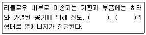
- 대류, 복사
- 대류, 반사
- 반사, 집광
- 복사, 집광
(정답률: 88%)
26. 플럭스의 역할이 아닌 것은?
- 청정화
- 산화방지
- 재산화 방지
- 세척방지
(정답률: 85%)
27. 아래 그림과 같은 이상적 온도 Profile 중 A-B 구간의 시간 설정으로 알맞은 것은?
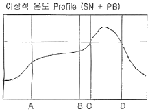
- 60 ~ 120초
- 120 ~ 180초
- 180 ~ 240초
- 240 ~ 300초
(정답률: 76%)
28. Cream Solder의 종류가 아닌 것은?
- 고온 Solder
- 은주석 Solder
- 저온 Solder
- Wave Solder
(정답률: 87%)
29. 다음 중 양호한 인쇄성을 위한 조건으로 옳지 않은 것은?
- 메탈 마스크(Metal Mask)의 프레임(Frame)에 휨이 없어야 한다.
- 메탈 마스크(Metal Mask)는 가능한 저장력(低張力)이 있어야 한다.
- 작업 중 크림 솔더(Cream Solder)의 점도 변화가 적어야 한다.
- 인쇄 후에도 점착성을 유지하여 부품의 탑재가 가능해야 한다.
(정답률: 70%)
30. 칩 부품 실장 시 틀어짐이 발생하였다. 그 해결 방법으로 틀린 것은?
- 장착높이 재설정
- 부품높이 재설정
- 장착 시 지연시간 재설정
- 부품인식높이 재설정
(정답률: 73%)
31. 주요 무연 솔더(Pb-free Solder) 불량 유형이 아닌 것은?
- 리프트 오프
- 휘스커
- 솔더포트(Pot) 내부 침식
- 접합 강도 저하
(정답률: 64%)
32. 마운터에서 발생하는 불량이 아닌 것은?
- 미장착
- 틀어짐
- 솔더부족
- 부품 일어섬
(정답률: 68%)
33. 다음 중 마운터 공정과 관련이 없는 부속장치는 무엇인가?
- 카셋트 검사 및 교정장치
- 솔더 페이스트 교반기
- 부품 연결장치
- 부품습기 제거장치(제습함)
(정답률: 58%)
34. 다음 보기 중에서 도입 시기별 순서가 맞게 되어 있는 것은?
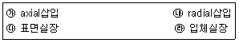
- ㉯→㉰→㉱→㉮
- ㉮→㉯→㉰→㉱
- ㉯→㉮→㉰→㉱
- ㉰→㉱→㉮→㉯
(정답률: 81%)
35. 오장착을 방지하기 위한 대응 방법과 거리가 먼 것은?
- 바코드 부착관리
- 부품 교환시 용량확인
- 부품리스트 부착
- 카세트 검사 및 교정
(정답률: 76%)
36. 다음 집적회로(IC)의 분류 중 집적 소자의 개수가 가장 많은 것은?
- VLSI
- LSI
- MSI
- SSI
(정답률: 84%)
37. GTO를 턴-오프 하기 위해서 가장 올바른 것은?
- 게이트에 (+)의 신호를 준다.
- 게이트에 (-)의 신호를 준다.
- 게이트의 전류를 작게 한다.
- 그대로 두면 일정 시간 후 오프된다.
(정답률: 80%)
38. PCB의 제조공정 중에 부식액, 도금액, 납땜 등으로부터 특정 영역을 보호하기 위하여 사용하는 피복재료를 통칭하는 것으로 맞는 것은?
- 랜드
- 레지스트
- 레진
- 디스미어
(정답률: 71%)
39. 다음 그림의 반도체 소자 기호 명칭은?
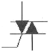
- 전계효과 트랜지스터(FET)
- 트라이액(TRIAC)
- 단일접합 트랜지스터(UJT)
- 다이액(DIAC)
(정답률: 74%)
40. 다음 중 회로의 층수에 의해서 PCB를 분류할 경우 그 종류가 아닌 것은?
- 단면 PCB
- 양면 PCB
- 다층면 PCB
- 플렉시블 PCB
(정답률: 79%)
3과목: 공압기초
41. P형 불순물 반도체를 만들기 위해 진성반도체에 첨가하는 3가의 불순물을 무엇이라고 하는가?
- 정공
- 전자
- 도우너
- 억셉터
(정답률: 57%)
42. 다음 보기 중 콘덴서의 종류가 아닌 것은?
- 전해 콘덴서
- 탄탈 콘덴서
- 세라믹 콘덴서
- 유전체 콘덴서
(정답률: 64%)
43. 다음 중 PCB 패턴(Pattern) 설계 시 유의 사항이 아닌 것은?
- 소신호의 패턴과 대전류 패턴은 근접하지 않도록 한다.
- 패턴과 패턴 간에 가능한 한 GND패턴을 통과 시킨다.
- 패턴은 최단거리를 유지하고 패턴이 길면 루프(Loop) 형상이 되도록 한다.
- 패턴 간의 전위차에 따라 패턴 간격을 유지한다.
(정답률: 70%)
44. 다음 중 양호한 다이오드를 테스트 했을 때 나타나는 현상이 아닌 것은?
- 순방향 시 매우 낮은 저항값을 나타낸다.
- 역방향 시 매우 높은 저항값을 나타낸다.
- 순방향이나 역방향 모두 낮은 저항값을 나타낸다.
- 실리콘 다이오드의 순방향 전압은 약 0.7V이다.
(정답률: 71%)
45. 전자부품 관리요령으로 가장 바람직한 것은?
- 모든 부품들은 항상 습한 곳에 보관해야 한다.
- 전자부품들은 종류별로 분류하고 동종품명은 크기별로 분류하는 것이 좋다.
- IC는 IC소켓에 고정하여 항상 보관한다.
- 슬라이드 스위치와 DIP 스위치는 구분하여 관리 할 필요가 없다.
(정답률: 72%)
46. PCB의 가공이 완료된 시점에서 PCB상의 모든 랜드에 검사용 핀 혹은 프로브를 접촉시켜 이상의 유무를 검사하는 방법을 무엇이라고 하는가?
- BBT(Bare Board Test)
- 회로시험(In-Circuit Test)
- 동작시험(Function Test)
- 비아홀 검사(Via-Hole Test)
(정답률: 77%)
47. 다음 기호(심벌)가 의미하는 전자부품은?
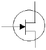
- DIODE
- TR
- Capacitor
- FET
(정답률: 77%)
48. 금속 중의 전자가 열이나 빛 등의 에너지를 가하면 전자가 공간에 방출된다. 다음 중 이러한 전자 방출의 종류에 해당 되지 않는 것은?
- 1차 전자 방출
- 열전자 방출
- 전기장 방출
- 광전자 방출
(정답률: 77%)
49. 다음 중 반도체 소자가 아닌 것은?
- 다이오드
- 트랜지스터
- 커패시터
- 광전자 방출소자
(정답률: 59%)
50. 다음 중 PCB 설계시 패턴 방향 간격 표준지침이 아닌것은?
- 양면 이상의 PCB패턴은 솔더 면과 부품 면의 패턴이 90도 교차하도록 한다.
- PCB 바깥쪽에서 패턴까지 일정한 간격을 유지한다.
- 솔더 면의 패턴 방향은 투입 방향(납땜방향)과 나란하게 한다.
- 양면 이상의 PCB패턴은 솔더 면과 부품 면의 패턴이 나란하게 한다.
(정답률: 47%)
51. 두 개의 복동 실린더가 1개의 실린더 형태로 조립되어 출력이 거의 2배의 큰 힘을 낼 수 있는 실린더는?
- 양로드형 실린더
- 단동 실린더
- 롤링 격판 실린더
- 텐덤 실린더
(정답률: 74%)
52. 공기의 흐름이 한 2방향으로만 허용되는 밸브는?
- 릴리프 밸브
- 체크 밸브
- 감압 밸브
- 시퀸스 밸브
(정답률: 67%)
53. 다음은 압력에 대한 설명이다. 맞는 것은?
- 절대압력=대기압력+진공압력
- 절대압력=대기압력+게이지압력
- 게이지압력=절대압력+대기압력
- 진공압력=대기압력+게이지압력
(정답률: 68%)
54. 공기압의 장점이 아닌 것은?
- 보수관리가 용이하다.
- 동력원의 발생이 용이하다.
- 외부누설 시 감전, 인화의 위험이 없다.
- 배수대책이 불필요하다.
(정답률: 60%)
55. 다음 중 밸브의 조작력 분류 기호 중 기계적 방법이 아닌 것은?
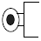
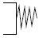
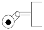
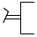
(정답률: 70%)
56. 다음 보기는 방향제어 밸브 기호이다. 포트와 방향수로 맞는 것은?
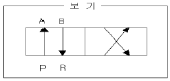
- 2/2way
- 3/2way
- 4/2way
- 4/3way
(정답률: 80%)
57. 압축공기 에너지를 기계적인 회전운동으로 바꾸어 주는 기기는?
- 공압 단동실린더
- 공기 압축기
- 공압 복동실린더
- 공압 모터
(정답률: 67%)
58. 국제 단위계는 SI 단위계를 쓴다. 다음 기본 단위를 나타내는 것 중 잘못 표기한 것은?
- 길이 - 미터 - m
- 질량 - 킬로그램 - ㎏
- 열역학 온도 - 켈빈 - C
- 시간 - 초 - s
(정답률: 79%)
59. 다음 중에서 압력의 단위가 아닌 것은?
- kgf/cm2
- bar
- 파스칼(Pa)
- 뉴턴(N)
(정답률: 77%)
60. 디스크 시트형 포핏 밸브의 특징이 아닌 것은?
- 응답시간이 길다.
- 내구성이 좋다.
- 밀봉이 우수하다.
- 가동부의 이동거리가 짧다.
(정답률: 62%)